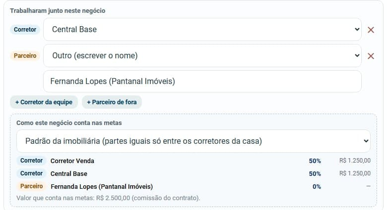
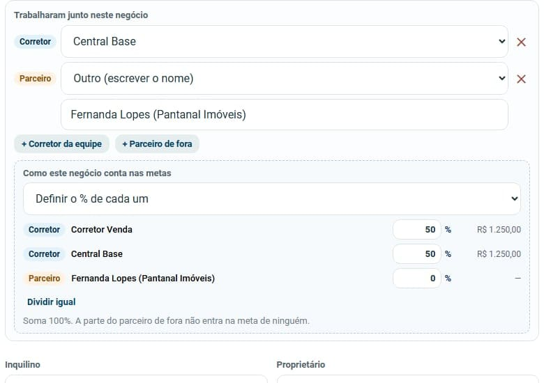
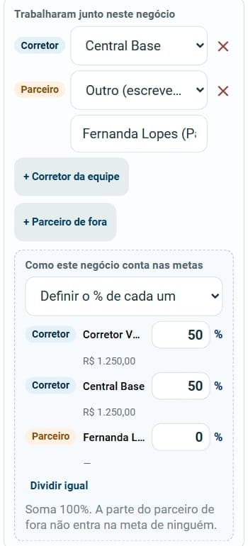

PROCEDIMENTO OPERACIONAL PADRÃO
Dividir o contrato entre os corretores nas metas (VGC)
SKL Gestão Imobiliária · Financeiro → Contratos → Como este negócio conta nas metas
- Objetivo
- Fazer o valor de um contrato fechado por mais de uma pessoa contar na meta de cada corretor, na proporção que a imobiliária decidir.
- Aplicação
- Contratos de locação e de compra e venda com mais de um envolvido em “Trabalharam junto neste negócio” (corretores da casa e parceiros de fora).
- Responsáveis
- Central, administrador e financeiro (quem cuida dos contratos). A regra padrão fica com a Central e o administrador.
- Pré-requisitos
- Contrato com o corretor que fechou e pelo menos mais um envolvido.
- Resultado esperado
- Painel (Metas e VGC por corretor) e tela de Metas mostram a parte de cada corretor, em vez do valor inteiro para o corretor que fechou.
1. Procedimento
- Abra Financeiro → Contratos e o contrato (ou + Novo contrato).
- Em Trabalharam junto neste negócio, use + Corretor da equipe e + Parceiro de fora para incluir quem participou.
- Logo abaixo aparece Como este negócio conta nas metas, com a parte de cada um e o valor que vai para a meta. Escolha uma opção:
- Padrão da imobiliária: segue a regra definida em Metas (passo 6).
- Partes iguais só entre os corretores da casa: o parceiro de fora não reduz a meta. Ex.: 2 corretores = 50% cada.
- Partes iguais entre todos: o parceiro de fora conta como um envolvido e a parte dele não vai para ninguém. Ex.: 2 corretores + 1 parceiro = 33,33% cada corretor.
- Definir o % de cada um: escreva o % de cada envolvido; a soma precisa fechar 100%. Dividir igual preenche partes iguais para começar.
- Toque em Criar contrato (ou Salvar alterações num contrato que já existe). Se escolheu definir o % e a soma não fecha 100%, o sistema avisa e não salva.
- Confira no Painel (quadros Metas e VGC por corretor) ou em Comissões → Metas.
- Regra padrão da imobiliária: em Comissões → Editar metas, campo “Contrato com mais de um envolvido”. Vale para todos os contratos que estão no “Padrão da imobiliária” e para o negócio que veio de corretor parceiro sem a comissão dividida.

Contrato com dois corretores e um parceiro: padrão da imobiliária (só os corretores da casa dividem).

Definir o % de cada um: 50% + 50% + 0% para o parceiro.

O mesmo bloco no celular.
Comissões → Editar metas: regra padrão para contratos com mais de um envolvido.
2. Pontos de atenção
Isto define quanto conta na meta de cada um. Quanto cada um recebe em dinheiro continua no bloco 💰 Comissão do contrato: os dois números podem ser diferentes.
Contratos antigos que ficaram no “Padrão da imobiliária” mudam junto se a regra padrão for trocada. Para travar a divisão de um contrato, escolha uma das outras opções nele.
Negócio do CRM com a comissão dividida em “Dividir comissão” continua seguindo aquela divisão.
3. Controle do documento
| Elaborado por | Versão | Data | Alteração |
|---|---|---|---|
| SKL Geo Soluções | 1.0 | 16/11/2026 | Emissão inicial. |